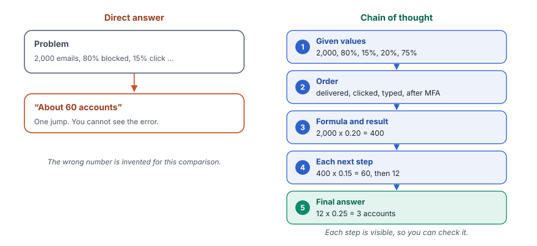

A chain-of-thought prompt asks the model to write its steps before the answer. A task with several steps then becomes more reliable and easy to check.
What you will learn
- Why a model makes more errors when it jumps straight to the answer
- How a prompt with numbered instructions makes the model show its work
- How to check each step of an answer, not only the result
- When chain of thought helps, and when it only adds cost
Read chapter 5 first, for the chain with a prompt template and a parser.
The idea
A model writes one token after the other. When it must give a number at once, it has no space to work out the intermediate values. For a task with several steps, for example a calculation in four stages, this often gives a wrong result.
A chain-of-thought prompt asks the model to write the intermediate steps first. Each written step becomes part of the text that the model reads for the next step. Thus, the model builds the answer piece by piece, as a person does on paper.
There is a second benefit. You can read the steps and find the exact place of an error. A single number gives you no such chance.
A mathematics teacher asks the students to show their working, not only the final answer. A student who writes each step makes fewer errors. When an error happens, the teacher sees the line where it started. A chain-of-thought prompt asks the model to show its working in the same way.
The idea in one picture
The chain is the same as in chapter 5. The difference is in the prompt. It asks for given values, an order, a formula for each step, the calculation and a clear final answer.

What we build in this chapter
Both programs solve three security calculations with a chain-of-thought prompt. The first one uses harder problems with four steps each. The second one uses simpler problems from the analysis of an Android app.
Security calculations with Gemini
- Aim
- Get correct and verifiable answers to calculations with several steps.
- Problem
- A phishing funnel, unpatched computers and log storage.
- Input
- Three word problems with percentages.
- Expected output
- The steps and a final answer, for example
The attacker could potentially access 3 accounts. - Model
- Gemini 3.1 Flash Lite
App analysis with Qwen
- Aim
- Use the same idea for simpler counts from an app analysis.
- Problem
- Location calls, unknown servers, camera and microphone use.
- Input
- Three short problems.
- Expected output
- The steps and a final answer, for example
25% of the observed API calls accessed location information. - Model
- Qwen 2.5 7B, through OpenRouter
![Data, for problem in problems, 3 security calculations, one at a time. Template, cot_prompt = ChatPromptTemplate.from_template(...), Role, an experienced cybersecurity analyst, {problem}, 5 steps, values, order, formula, calculation, final answer. Model, llm = ChatGoogleGenerativeAI(model="gemini-3.1-flash-lite", temperature=0), One long answer for each problem. Parser, StrOutputParser(), Keeps the text. Output, print the problem and the solution, Steps and a final answer, 3 accounts, 9 computers, 270 GB. A loop goes back from stage 5 to stage 1, next problem.](../../assets/img/diagrams/ai-08-ex1-flow.svg)
Step 1Create the file
In your project folder, create the file src/07_chain_of_thought_google.py and open it in your editor.
Step 2Import what you need
from dotenv import load_dotenv
from langchain_core.output_parsers import StrOutputParser
from langchain_core.prompts import ChatPromptTemplate
from langchain_google_genai import ChatGoogleGenerativeAIThese are the four imports from chapter 5, in a different order. The order of imports does not change the program.
Step 3Create the model and the parser
def main():
load_dotenv()
# Initialize the model
llm = ChatGoogleGenerativeAI(
model="gemini-3.1-flash-lite",
temperature=0,
)
# Parser to extract the text from the model response
parser = StrOutputParser()temperature=0 is the right choice for calculations. A calculation has one correct answer, so variety does not help.
Step 4Write the chain-of-thought prompt
# Create the Chain-of-Thought prompt
cot_prompt = ChatPromptTemplate.from_template("""
You are an experienced cybersecurity analyst.
Solve the following cybersecurity problem using clear and verifiable calculation steps.
Problem:
{problem}
Instructions:
1. Identify the given values.
2. Determine the order of calculations.
3. Show the formula used in each step.
4. Perform each calculation sequentially.
5. Clearly state the final answer.
""")- "You are an experienced cybersecurity analyst" gives the role, as in chapter 4.
- "using clear and verifiable calculation steps" asks for steps that a reader can check.
{problem}is the placeholder for each problem.- The five instructions are the core of the pattern. They tell the model what to write and in which order. First the given values, then the order of calculations, then a formula for each step, then each calculation and last the final answer.
- A short phrase such as "Let's think step by step" also works for many models. Numbered instructions give you more control over the form of the steps.
Step 5Join the parts into a chain
# Create the chain
chain = cot_prompt | llm | parserStep 6Add the problems
# Sample problems
problems = [
"""
A phishing campaign sends 2,000 emails. The email security gateway
blocks 80% of them. Of the emails that reach employees, 15% of users
click the malicious link. Of those who click, 20% enter their passwords.
Multi-factor authentication prevents account access for 75% of those
users. How many accounts could the attacker potentially access?
""",
"""
An organisation has 500 computers. Security patches have been
installed on 82% of them. Of the unpatched computers, 40% are
accessible from the internet. Of those internet-accessible computers,
25% contain a critical vulnerability. How many computers are both
internet-accessible and critically vulnerable?
""",
"""
A security system monitors 250 devices. Each device generates
20 MB of security logs per day. Logs must be retained for 90 days.
Compression reduces the required storage by 40%. Using
1 GB = 1,000 MB, how much storage is required after compression?
""",
]- Each problem has four or five numbers that depend on each other. One wrong step makes every later step wrong.
- The third problem gives the unit rule "1 GB = 1,000 MB" in the text. A clear unit rule removes a common source of disagreement, because some people use 1,024.
Step 7Run the chain for each problem
# Invoke the chain for each problem
for problem in problems:
result = chain.invoke({"problem": problem})
print(f"\nProblem:\n{problem.strip()}")
print(f"\nSolution:\n{result.strip()}")
print("="*60)problem.strip() removes the empty lines around the problem text. The loop prints each problem, then the full solution with its steps.
Step 8Make the file start main() and run it
if __name__ == "__main__":
main()uv run python src/07_chain_of_thought_google.pyShow the full output150 lines
Problem:
A phishing campaign sends 2,000 emails. The email security gateway
blocks 80% of them. Of the emails that reach employees, 15% of users
click the malicious link. Of those who click, 20% enter their passwords.
Multi-factor authentication prevents account access for 75% of those
users. How many accounts could the attacker potentially access?
Solution:
To determine the number of accounts the attacker could potentially access, we will break the problem down into sequential steps based on the flow of the phishing campaign.
### 1. Identify the Given Values
* **Total emails sent:** 2,000
* **Gateway block rate:** 80%
* **User click rate (of those delivered):** 15%
* **Password entry rate (of those who clicked):** 20%
* **MFA prevention rate (of those who entered passwords):** 75%
---
### 2. Order of Calculations
1. Calculate the number of emails that bypass the gateway.
2. Calculate the number of users who click the link.
3. Calculate the number of users who enter their passwords.
4. Calculate the number of accounts compromised after MFA.
---
### 3. Calculations
**Step 1: Emails that reach employees**
* *Formula:* Total Emails × (1 - Block Rate)
* *Calculation:* $2,000 \times (1 - 0.80) = 2,000 \times 0.20 = 400$ emails delivered.
**Step 2: Users who click the link**
* *Formula:* Delivered Emails × Click Rate
* *Calculation:* $400 \times 0.15 = 60$ users clicked.
**Step 3: Users who enter their passwords**
* *Formula:* Clicked Emails × Password Entry Rate
* *Calculation:* $60 \times 0.20 = 12$ users entered passwords.
**Step 4: Accounts compromised after MFA**
* *Formula:* Password Entries × (1 - MFA Prevention Rate)
* *Calculation:* $12 \times (1 - 0.75) = 12 \times 0.25 = 3$ accounts.
---
### 4. Final Answer
The attacker could potentially access **3** accounts.
============================================================
Problem:
An organisation has 500 computers. Security patches have been
installed on 82% of them. Of the unpatched computers, 40% are
accessible from the internet. Of those internet-accessible computers,
25% contain a critical vulnerability. How many computers are both
internet-accessible and critically vulnerable?
Solution:
As an experienced cybersecurity analyst, I have broken down the problem into logical steps to determine the number of high-risk assets within the organization.
### 1. Identify the Given Values
* **Total computers ($T$):** 500
* **Patch rate:** 82%
* **Unpatched rate:** 100% - 82% = 18%
* **Internet-accessible rate (of unpatched):** 40%
* **Critical vulnerability rate (of internet-accessible):** 25%
---
### 2. Determine the Order of Calculations
1. Calculate the total number of **unpatched computers**.
2. Calculate the number of **unpatched computers that are internet-accessible**.
3. Calculate the number of **internet-accessible computers that are critically vulnerable**.
---
### 3. Calculations
**Step 1: Calculate the number of unpatched computers ($U$)**
* **Formula:** $U = T \times (1 - \text{Patch Rate})$
* **Calculation:** $500 \times 0.18 = 90$
* *Result:* There are 90 unpatched computers.
**Step 2: Calculate the number of internet-accessible, unpatched computers ($A$)**
* **Formula:** $A = U \times \text{Internet-accessible Rate}$
* **Calculation:** $90 \times 0.40 = 36$
* *Result:* There are 36 unpatched computers accessible from the internet.
**Step 3: Calculate the number of internet-accessible, critically vulnerable computers ($V$)**
* **Formula:** $V = A \times \text{Critical Vulnerability Rate}$
* **Calculation:** $36 \times 0.25 = 9$
* *Result:* There are 9 computers that meet both criteria.
---
### 4. Final Answer
There are **9** computers that are both internet-accessible and critically vulnerable.
============================================================
Problem:
A security system monitors 250 devices. Each device generates
20 MB of security logs per day. Logs must be retained for 90 days.
Compression reduces the required storage by 40%. Using
1 GB = 1,000 MB, how much storage is required after compression?
Solution:
To determine the total storage required for the security logs, we will follow a structured calculation process.
### 1. Identify the Given Values
* **Number of devices:** 250
* **Logs per device per day:** 20 MB
* **Retention period:** 90 days
* **Compression rate:** 40% reduction (meaning 60% of the original size remains)
* **Conversion factor:** 1 GB = 1,000 MB
---
### 2. Determine the Order of Calculations
1. Calculate the total daily log volume for all devices.
2. Calculate the total volume for the 90-day retention period.
3. Apply the compression factor to find the compressed size in MB.
4. Convert the final result from MB to GB.
---
### 3. Formulas and Sequential Calculations
**Step 1: Calculate total daily log volume**
* *Formula:* (Number of devices) × (Logs per device per day)
* *Calculation:* 250 devices × 20 MB/device = **5,000 MB/day**
**Step 2: Calculate total volume for 90 days**
* *Formula:* (Daily volume) × (Retention period)
* *Calculation:* 5,000 MB/day × 90 days = **450,000 MB**
**Step 3: Apply compression**
* *Note:* A 40% reduction means we retain 60% (100% - 40% = 60%) of the original data.
* *Formula:* (Total volume) × (1 - Compression rate)
* *Calculation:* 450,000 MB × 0.60 = **270,000 MB**
**Step 4: Convert to GB**
* *Formula:* (Total compressed MB) / 1,000
* *Calculation:* 270,000 MB / 1,000 = **270 GB**
---
### 4. Final Answer
The total storage required after compression is **270 GB**.
============================================================The headings and the format of the steps can change. The final numbers must stay the same, because the problems have exact answers.
Check the steps yourself. In the first problem, 2,000 × 0.20 = 400, 400 × 0.15 = 60, 60 × 0.20 = 12 and 12 × 0.25 = 3. In the second problem, 18% of 500 computers are unpatched, that is 90. Then 40% of 90 is 36, and 25% of 36 is 9. In the third problem, 250 × 20 × 90 = 450,000 MB, and 60% of that is 270 GB. All three answers are correct, and you can check each one in a minute.
Some formulas appear in LaTeX, for example $400 \times 0.15 = 60$. The model writes such notation because it learned it from mathematical texts.
InsideWhat happens inside the calls
Each problem is one call of the chain. The steps of the answer cost output tokens.
![A sequence diagram with the lanes Your code, cot_prompt, llm, Gemini API, parser. Step 1, Your code to cot_prompt, chain.invoke({"problem" problem}), the chain starts with the template. Step 2, cot_prompt to cot_prompt, Fill {problem}, 5 steps, values, order, formula, calculation, final answer. Step 3, cot_prompt to llm, Prompt value, the filled messages go to the model. Step 4, llm to Gemini API, HTTPS request with the API key, temperature 0. Step 5, Gemini API to llm, Solution with steps, 3 accounts, 9 computers, 270 GB. Step 6, llm to parser, AIMessage, the chain passes the reply to the parser. Step 7, parser to parser, Keep the text, StrOutputParser returns a string. Step 8, parser to Your code, The result, the code prints the problem and the solution. Steps 1 to 8 repeat, Repeated for each of the 3 problems.](../../assets/img/diagrams/ai-08-ex1-seq.svg)
Full code of Example 1src/07_chain_of_thought_google.pyGitHub
"""
Title: Chain of Thought Prompting (Google Generative AI)
uv run python src/07_chain_of_thought_google.py
"""
from dotenv import load_dotenv
from langchain_core.output_parsers import StrOutputParser
from langchain_core.prompts import ChatPromptTemplate
from langchain_google_genai import ChatGoogleGenerativeAI
def main():
load_dotenv()
# Initialize the model
llm = ChatGoogleGenerativeAI(
model="gemini-3.1-flash-lite",
temperature=0,
)
# Parser to extract the text from the model response
parser = StrOutputParser()
# Create the Chain-of-Thought prompt
cot_prompt = ChatPromptTemplate.from_template("""
You are an experienced cybersecurity analyst.
Solve the following cybersecurity problem using clear and verifiable calculation steps.
Problem:
{problem}
Instructions:
1. Identify the given values.
2. Determine the order of calculations.
3. Show the formula used in each step.
4. Perform each calculation sequentially.
5. Clearly state the final answer.
""")
# Create the chain
chain = cot_prompt | llm | parser
# Sample problems
problems = [
"""
A phishing campaign sends 2,000 emails. The email security gateway
blocks 80% of them. Of the emails that reach employees, 15% of users
click the malicious link. Of those who click, 20% enter their passwords.
Multi-factor authentication prevents account access for 75% of those
users. How many accounts could the attacker potentially access?
""",
"""
An organisation has 500 computers. Security patches have been
installed on 82% of them. Of the unpatched computers, 40% are
accessible from the internet. Of those internet-accessible computers,
25% contain a critical vulnerability. How many computers are both
internet-accessible and critically vulnerable?
""",
"""
A security system monitors 250 devices. Each device generates
20 MB of security logs per day. Logs must be retained for 90 days.
Compression reduces the required storage by 40%. Using
1 GB = 1,000 MB, how much storage is required after compression?
""",
]
# Invoke the chain for each problem
for problem in problems:
result = chain.invoke({"problem": problem})
print(f"\nProblem:\n{problem.strip()}")
print(f"\nSolution:\n{result.strip()}")
print("="*60)
if __name__ == "__main__":
main()![Data, for problem in problems, 3 Android app analysis problems, one at a time. Template, cot_prompt = ChatPromptTemplate.from_template(...), Role, an Android application security analyst, {problem}, 3 steps, identify, analyze step by step, state the answer. Model, llm = ChatOpenRouter(model="qwen/qwen-2.5-7b-instruct", temperature=0), One long answer for each problem. Parser, StrOutputParser(), Keeps the text. Output, print the problem and the solution, Steps and a final answer, 25%, 20%, 10 accesses with 60% from the camera. A loop goes back from stage 5 to stage 1, next problem.](../../assets/img/diagrams/ai-08-ex2-flow.svg)
A Same mark tells you that a line has the same job as before. A New mark tells you what is different.
Steps 1 to 3File, imports, model and parser
from dotenv import load_dotenv
from langchain_core.output_parsers import StrOutputParser
from langchain_core.prompts import ChatPromptTemplate
from langchain_openrouter import ChatOpenRouter
def main():
load_dotenv()
# Initialize the model
llm = ChatOpenRouter(
model="qwen/qwen-2.5-7b-instruct",
temperature=0,
)
# Parser to extract the text from the model response
parser = StrOutputParser()- New
ChatOpenRouterwith the Qwen model. - SameThe parser and
temperature=0.
Step 4Write the chain-of-thought prompt
# Create the Chain of Thought prompt
cot_prompt = ChatPromptTemplate.from_template(
"""
You are an Android application security analyst.
Analyze the following Android app analysis problem using clear
and simple steps.
Problem:
{problem}
Instructions:
1. Identify the important information.
2. Analyze it step by step.
3. Clearly state the final answer.
"""
)- NewThe role is an Android application security analyst.
- NewOnly three instructions, identify, analyze step by step and state the answer. The problems are simpler, so the prompt asks for less structure.
Steps 5 to 8Chain, problems and run
# Sample Android app analysis problems
problems = [
"""
During analysis of an Android app, 12 API calls were observed.
9 calls accessed normal application data and 3 calls accessed
location information.
What percentage of the observed API calls accessed location information?
""",
"""
During analysis of an Android app, 10 network connections were observed.
8 connections were made to the app's known backend servers and
2 connections were made to an unknown external server.
What percentage of the connections were made to the unknown server?
""",
"""
An Android app was observed accessing the camera 6 times and the
microphone 4 times during a 10-minute test.
How many total sensitive resource accesses were observed, and
what percentage were camera accesses?
""",
]- NewThree problems from an app analysis, about API calls, network connections and the use of the camera and the microphone.
- SameThe chain, the loop and the prints.
uv run python src/07_chain_of_thought_openrouter.pyShow the full output122 lines
Problem:
During analysis of an Android app, 12 API calls were observed.
9 calls accessed normal application data and 3 calls accessed
location information.
What percentage of the observed API calls accessed location information?
Solution:
Sure, let's break down the problem step by step.
### Step 1: Identify the Important Information
- Total number of API calls observed: 12
- Number of API calls accessing normal application data: 9
- Number of API calls accessing location information: 3
### Step 2: Analyze It Step by Step
1. **Determine the total number of API calls**: We know this is 12.
2. **Identify the number of API calls that accessed location information**: This is given as 3.
3. **Calculate the percentage**:
- The formula to calculate the percentage is: \(\text{Percentage} = \left( \frac{\text{Number of API calls accessing location information}}{\text{Total number of API calls}} \right) \times 100\)
- Plugging in the numbers: \(\text{Percentage} = \left( \frac{3}{12} \right) \times 100\)
### Step 3: Clearly State the Final Answer
Now, let's do the calculation:
\[
\text{Percentage} = \left( \frac{3}{12} \right) \times 100 = 0.25 \times 100 = 25\%
\]
So, **25%** of the observed API calls accessed location information.
============================================================
Problem:
During analysis of an Android app, 10 network connections were observed.
8 connections were made to the app's known backend servers and
2 connections were made to an unknown external server.
What percentage of the connections were made to the unknown server?
Solution:
Sure, let's break down the problem step by step.
### Step 1: Identify the Important Information
- Total number of network connections observed: 10
- Number of connections made to known backend servers: 8
- Number of connections made to an unknown external server: 2
### Step 2: Analyze It Step by Step
1. **Calculate the Percentage**:
- We need to find out what percentage of the total connections were made to the unknown server.
- The formula to calculate the percentage is:
\[
\text{Percentage} = \left( \frac{\text{Number of unknown server connections}}{\text{Total number of connections}} \right) \times 100
\]
2. **Substitute the Values**:
- Number of unknown server connections = 2
- Total number of connections = 10
- So, the calculation becomes:
\[
\text{Percentage} = \left( \frac{2}{10} \right) \times 100
\]
3. **Perform the Calculation**:
- Simplify the fraction first:
\[
\frac{2}{10} = 0.2
\]
- Then multiply by 100 to get the percentage:
\[
0.2 \times 100 = 20\%
\]
### Step 3: Clearly State the Final Answer
The percentage of connections made to the unknown server is **20%**.
============================================================
Problem:
An Android app was observed accessing the camera 6 times and the
microphone 4 times during a 10-minute test.
How many total sensitive resource accesses were observed, and
what percentage were camera accesses?
Solution:
Sure, let's break down the problem step by step.
### Step 1: Identify the Important Information
- The app accessed the camera 6 times.
- The app accessed the microphone 4 times.
- The total test duration was 10 minutes.
### Step 2: Analyze It Step by Step
1. **Calculate Total Sensitive Resource Accesses:**
- Camera accesses: 6
- Microphone accesses: 4
- Total accesses = Camera accesses + Microphone accesses
- Total accesses = 6 + 4 = 10
2. **Calculate Percentage of Camera Accesses:**
- Total accesses = 10 (from the previous calculation)
- Camera accesses = 6
- Percentage of camera accesses = (Camera accesses / Total accesses) * 100%
- Percentage of camera accesses = (6 / 10) * 100% = 60%
### Step 3: Clearly State the Final Answer
- The total number of sensitive resource accesses observed is **10**.
- The percentage of camera accesses is **60%**.
So, the final answer is:
- Total sensitive resource accesses: **10**
- Percentage of camera accesses: **60%**
============================================================The steps and the wording change between runs, but the numbers must stay the same.
All three answers are correct, 25%, 20%, and 10 accesses with 60% from the camera. In the third problem, the model also listed the test time of 10 minutes as important information, but it did not use it. Real problems often contain such extra facts. A clear list of given values shows you which facts the model used.
InsideWhat happens inside the calls
The same chain with a shorter prompt and the Qwen model.
![A sequence diagram with the lanes Your code, cot_prompt, llm, OpenRouter API, parser. Step 1, Your code to cot_prompt, chain.invoke({"problem" problem}), the chain starts with the template. Step 2, cot_prompt to cot_prompt, Fill {problem}, 3 steps, identify, analyze step by step, state the answer. Step 3, cot_prompt to llm, Prompt value, the filled messages go to the model. Step 4, llm to OpenRouter API, HTTPS request with the API key, temperature 0. Step 5, OpenRouter API to llm, Solution with steps, 25%, 20%, 10 accesses with 60% from the camera. Step 6, llm to parser, AIMessage, the chain passes the reply to the parser. Step 7, parser to parser, Keep the text, StrOutputParser returns a string. Step 8, parser to Your code, The result, the code prints the problem and the solution. Steps 1 to 8 repeat, Repeated for each of the 3 problems.](../../assets/img/diagrams/ai-08-ex2-seq.svg)
Full code of Example 2src/07_chain_of_thought_openrouter.pyGitHub
"""
Title: Chain of Thought Prompting (OpenRouter)
uv run python src/07_chain_of_thought_openrouter.py
"""
from dotenv import load_dotenv
from langchain_core.output_parsers import StrOutputParser
from langchain_core.prompts import ChatPromptTemplate
from langchain_openrouter import ChatOpenRouter
def main():
load_dotenv()
# Initialize the model
llm = ChatOpenRouter(
model="qwen/qwen-2.5-7b-instruct",
temperature=0,
)
# Parser to extract the text from the model response
parser = StrOutputParser()
# Create the Chain of Thought prompt
cot_prompt = ChatPromptTemplate.from_template(
"""
You are an Android application security analyst.
Analyze the following Android app analysis problem using clear
and simple steps.
Problem:
{problem}
Instructions:
1. Identify the important information.
2. Analyze it step by step.
3. Clearly state the final answer.
"""
)
# Create the chain
chain = cot_prompt | llm | parser
# Sample Android app analysis problems
problems = [
"""
During analysis of an Android app, 12 API calls were observed.
9 calls accessed normal application data and 3 calls accessed
location information.
What percentage of the observed API calls accessed location information?
""",
"""
During analysis of an Android app, 10 network connections were observed.
8 connections were made to the app's known backend servers and
2 connections were made to an unknown external server.
What percentage of the connections were made to the unknown server?
""",
"""
An Android app was observed accessing the camera 6 times and the
microphone 4 times during a 10-minute test.
How many total sensitive resource accesses were observed, and
what percentage were camera accesses?
""",
]
# Invoke the chain for each problem
for problem in problems:
result = chain.invoke({"problem": problem})
print(f"\nProblem:\n{problem.strip()}")
print(f"\nSolution:\n{result.strip()}")
print("="*60)
if __name__ == "__main__":
main()Two examples, side by side
| Example 1 | Example 2 | |
|---|---|---|
| Problems | Four steps each, with percentages of percentages | One or two steps each |
| Instructions | Five, with formulas | Three, more open |
| Model | Gemini 3.1 Flash Lite | Qwen 2.5 7B, through OpenRouter |
| Result | Three of three correct | Three of three correct |
| Same | The chain, the parser, the placeholder {problem} and the loop | |
When it works and when it does not
- It works for calculations, logic puzzles, plans and any task where one result depends on another.
- It is not needed for simple tasks such as a label or a translation. The extra steps then only cost time and tokens.
- The steps can be wrong too. A model can write a correct formula and a wrong result. Check important numbers with code, not with the model.
- One line of reasoning is not always enough. For a decision with several options, the model needs to compare paths. Chapter 9 shows tree of thought.
To compare this pattern with the other prompting patterns, open the prompting patterns quick reference.
Risk calculations such as these often support real decisions, for example a budget or a priority. Two points matter.
- Steps look convincing. A neat list of steps feels correct even when one step is wrong. Recalculate every number that drives a decision.
- Do not show the steps to every user. In some apps, the reasoning can reveal internal rules, thresholds or data that the final answer hides. Decide which parts of the output the user sees.
Check yourself
Why does a model make fewer errors when it writes its steps?
Each written step becomes text that the model reads for the next step. The model then builds the answer from intermediate results, instead of a jump to the final number.
Which task does not need chain of thought, a sentiment label or a four-step cost calculation?
The sentiment label. It is a single decision. The cost calculation has steps that depend on each other, so it benefits from chain of thought.
The steps of an answer look correct. Is the final number then correct?
Not always. A model can write the right formula and a wrong result. Check important numbers with code or by hand.
How long does a PIN attack take?
A phone has a 4-digit PIN. After every 5 wrong tries, it locks for 30 seconds. Ask a local model with Ollama, with a chain-of-thought prompt, how long an attacker needs to try all possible PINs. Then check the answer yourself.
from langchain_ollama import ChatOllama
llm = ChatOllama(model="llama3.2:3b", temperature=0)- Ask the model to list the given values, the number of PINs, the number of lock periods and the total time.
- Tell the model to ignore the time of each single try, so the answer stays simple.
Show one solutionsrc/07_chain_of_thought_ollama.py
"""
Title: Chain of Thought Prompting (Ollama)
uv run python src/07_chain_of_thought_ollama.py
"""
from langchain_core.output_parsers import StrOutputParser
from langchain_core.prompts import ChatPromptTemplate
from langchain_ollama import ChatOllama
def main():
llm = ChatOllama(model="llama3.2:3b", temperature=0)
parser = StrOutputParser()
cot_prompt = ChatPromptTemplate.from_template("""
You are a mobile security analyst.
Problem: {problem}
Instructions:
1. List the given values.
2. Calculate the number of possible PINs.
3. Calculate the number of lock periods.
4. Calculate the total time in seconds, then in hours.
5. State the final answer in one sentence.
""")
chain = cot_prompt | llm | parser
problem = (
"A phone has a 4-digit PIN. After every 5 wrong tries, the phone locks "
"for 30 seconds. Ignore the time of each single try. How long does an "
"attacker need to try all possible PINs?"
)
print(chain.invoke({"problem": problem}))
if __name__ == "__main__":
main()A possible output, shortened. Your steps will look different.
1. Given values: 4 digits, 5 tries per lock, 30 seconds per lock.
2. Possible PINs: 10 x 10 x 10 x 10 = 10,000.
3. Lock periods: 10,000 / 5 = 2,000.
4. Total time: 2,000 x 30 = 60,000 seconds = 60,000 / 3,600 = 16.7 hours.
5. An attacker needs about 16.7 hours to try all possible PINs.Check it. 10,000 PINs need 2,000 groups of 5 tries. 2,000 locks of 30 seconds are 60,000 seconds, that is about 16.7 hours. Real phones make the lock time longer after many failures, so a real attack takes much longer.
Key terms at a glance
| Term | Meaning |
|---|---|
| Chain of thought | A prompt that makes the model write its steps before the answer. |
| Intermediate step | A partial result that a later step uses. |
| Verifiable | Easy to check by a person or by code. |
| LaTeX | A notation for mathematical formulas, for example $a \times b$. |
| Prompt template | A prompt with slots that the code fills each time. |
| Output parser | Turns the reply of the model into the form that you need. |
| Temperature | How much the model varies its answers. |